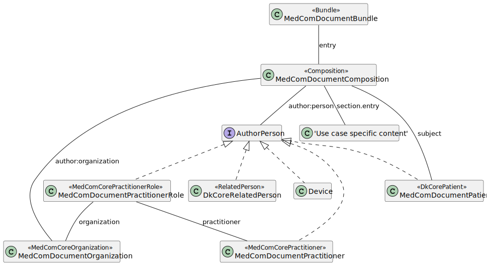

DK MedCom Document
2.0.0 - release
DK
DK MedCom Document
2.0.0 - release
DK
This page is part of the DK MedCom Document (v2.0.0: Release) based on FHIR (HL7® FHIR® Standard) R4. This is the current published version in its permanent home (it will always be available at this URL). For a full list of available versions, see the Directory of published versions
| Official URL: http://medcomfhir.dk/ig/document/ImplementationGuide/medcom.fhir.dk.document | Version: 2.0.0 | |||
| Active as of 2026-01-14 | Computable Name: MedComDocument | |||
This Implementation Guide (IG) is provided by MedCom to describe the use of FHIR ®© in document-based exchange of data in Danish healthcare.
The IG contains profiles that are used to define a general model for MedCom FHIR documents. The use case-specific profiles are maintained in individual IGs.
The profiles build upon the knowledge obtained through the use of CDA in Denmark and the work around FHIR documents from HL7 International.
The figure below illustrates a general document model, which all MedCom documents will comply to. Document profiles in this IG are all prefixed with "MedComDocument". Besides the profiles shown in the figure, a MedCom document can also include some MedCom Core profiles and profiles made to support a specific use case. Altogether they constitute the actual content of a MedCom FHIR document. The following sections describe the overall purpose of each document profile.

The figure shows the general MedCom document model. It is a structural overview of a MedCom Document Bundle, illustrating the relationships between Bundle, Composition, authorPerson, subject (patient), and referenced resources such as Practitioner, PractitionerRole, Organization, RelatedPerson, Device, and use-case–specific content.
You will find a list of all MedCom Document profiles in the "Profiles" tab in the menu.
In FHIR, Resource.identifier is intended to capture business identifiers that remain constant across system boundaries, which differs from Resource.id, the internal technical identifier used within a single FHIR Bundle.
All resources included in a MedCom FHIR document MUST carry an identifier element consisting of both a system and a value. The identifier SHALL be globally unique, persistent, and stable over time. This means that the identifier MUST NOT change as long as the resource represents the same underlying real-world entity or dataset. For example, a Patient resource will always carry the same civil registration number (CPR) as its identifier.
Global uniqueness: To ensure global uniqueness, implementations may for example use UUIDv4 or UUIDv5. Use authoritative identifiers when available, such as CPR numbers or SOR codes.
Persistence across snapshots: Even if a document is re-created or updated, resources representing the same entity (e.g., Patient, Practitioner, Organization, Encounter) MUST retain their identifier.
Bundle.identifier: Once a document is assembled into a Bundle, the document is immutable, meaning its content cannot be changed, and the document id (Bundle.identifier) can never be reused.
XML and JSON: Note that the document may be represented in either XML or JSON and interconverted between these or have its character encoding changed, all the while remaining the same document.
In the MedCom Terminology IG all referenced MedCom Terminology CodeSystems and Value sets developed by MedCom can be found.
In the MedCom Terminology for XDS Metadata all MedCom CodeSystems and Value sets related to metadata can be found.
Note that the IG versions linked may be newer than the versions used as dependencies in this implementation guide. For the exact dependency versions applied, see the Dependencies tab in the top menu under More.
Besides Terminology and metadata IGs, this IG has a dependency to the MedComCore IG, DK-core, defined by HL7 Denmark and IHE MHD. Note that the IG versions linked may be newer than the versions used as dependencies in this implementation guide. For the exact dependency versions applied, see the Dependencies tab in the top menu under More.
More information about MedCom Document can be found here. MedCom document profiles does not alone constitute a standard.
FHIR profiles are managed under MedCom: Source code.
A description of governance and guidance for MedCom's FHIR standards, can be found on the MedCom Landing Page.
The MedCom FHIR landing page provides an overview of governance requirements that apply to MedCom’s FHIR standards. This includes e.g. the mandatory rules for interpreting MustSupport, the formal validation requirements that implementers must follow, the expectations for producing narrative texts and governance for how MedCom Terminology is versioned. In addition, the governance section outlines the rules for MedCom FHIR Messaging and Document Sharing, including requirements for e.g. message flow and envelope usage.
The landing page also offers help to developers to understand how to work with MedCom’s FHIR standards. This includes a guide on how to read an Implementation Guide. Users will also find instructions on how to use some of the required tools, such as validation setup and how to use Touchstone.
Due to inconsistencies between MedCom’s XDS Metadata Standard and FHIR representations of code systems and value sets, selected code systems and value sets from the MedCom XDS Metadata Standard IG are temporarily included in this Implementation Guide with necessary adaptations. They will be removed from this IG once these issues are resolved in version 2.0 of the MedCom XDS Metadata Standard.
The affected code systems are listed below (value sets using these code systems are included as well):
| OID | Name | Description from OID-registry | Owner | CodeSystem reference |
|---|---|---|---|---|
| 2.16.840.1.113883.6.96 | SCT | Systematized Nomenclature Of MEDicine (SNOMED) Clinical Terms (CT) | IHTSDO | http://snomed.info/sct|http://snomed.info/sct/554471000005108 |
| 2.16.840.1.113883.6.1 | LOINC | Logical Observation Identifier Names and Codes (LOINC) | Regenstrief Institute | http://loinc.org |
| 2.16.840.1.113883.5.79 | mediaType | mediaType | HL7 | urn:ietf:bcp:13 |
| 2.16.840.1.113883.6.121 | ieft3066 | Tags for the Identification of Languages | HL7 | urn:ietf:bcp:47 |
| 2.16.840.1.113883.5.25 | Confidentiality | Confidentiality | HL7 | http://terminology.hl7.org/CodeSystem/v3-Confidentiality |
| 1.2.208.184.100.9 | classcode | Danish Integrating the Healthcare Enterprise (IHE) metadata class codes | MedCom | |
| 1.2.208.184.100.1 | message-codes | Message codes administered by MedCom | MedCom | |
| 1.2.208.184.100.10 | formatcode | Danish Integrating the Healthcare Enterprise (IHE) metadata format codes | MedCom | |
| - | homeCommunityId | - | MedCom |
MedCom is responsible for this IG.
If you have any questions, please contact fhir@medcom.dk or write to MedCom's stream in Zulip.